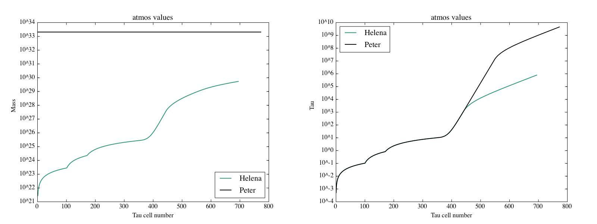
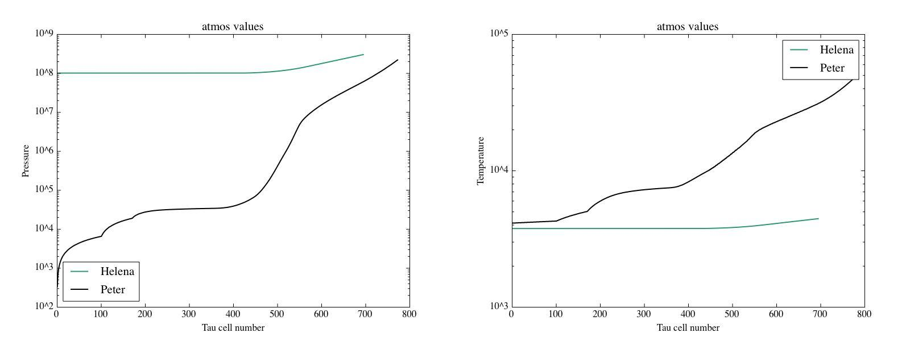
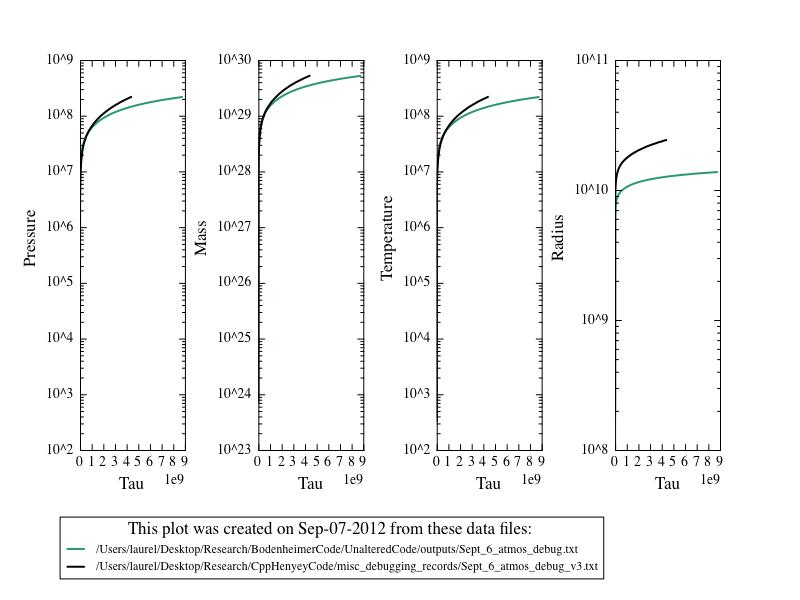

Date & Time: Sept. 6, 2012
Location: home
Computing context: MachoMac
(/Desktop/Research/CppHenyeyCode/src, /Desktop/Research/BodenheimerCode/UnalteredCode)
From last time:
The G values mostly agree between the two codes, except at the outer mass cell
Does setting the outmost G values to Peter's code's G values get Helena to produce dX values that agree w/ Peter's code?
Nope, it makes absolutely no difference.
The outermost G2J, G4J (but esp. the former) values differ between codes. Perhaps this is also having some significant effect on the outermost few CDE matrices??
Maybe how the two codes are determining or handling the P/r/L/T values at the outermost mass cell is causing the problem.
It's looking like the G2 and G4 value problems at the outermost mass cell are related to my atmos.cpp calculations. In the midst of debugging that and comparing its results to Peter's code.
My Tatm values are ~10x lower than Peters
My Ratm values are just straight-up way too small...
To Do Today:
Check my atmos calculations again, to figure out why they're
returning different Tatm and Ratm values than Peter's calculations
are.
For the 1Msun, n=3/2, no fusion input model:
Have my code print out the atmos values at each dTau step
Have Peter's code do the same
Plot the two to compare them, and see how/where they
differ. See Figure 1.

Figure
1
It looks like the way Helena is handling the atmospheric
mass tally is different from the way Peter's code is doing it.
That may be what's causing the differences to appear...
And then figure out why...
Getting very different kappa values in the atmos
calculations.
So, check my kappa lookup table process in Helena, to
make sure nothing's going off the rails, there...
The problems (with the starting pressure values, at
least) are happening because my eos tables don't extend down to
low enough pressures. (See Figure 2 for atmospheric temperature
and pressure profile comparisons between the two codes.) Need to
fix that. Done.

Figure
2
Now that the issue with the eos lookup tables' ranges has been addressed, let's see how the atmospheric values calculated by the two codes compare. (See Figure 3.) The mass, pressure, and temperature values now seem to agree much better at the bottom of the atmosphere, though the inner radius values differ by a factor of ~2. Also, Helena goes in to a tau depth ~2x larger than Peter's code does.
Not sure why this is-- it might be due to the dM
restrictions in Helena. What happens if I change that from 0.9dM
to 0.5dM? Will that fix this discrepancy in the tau depth?
Answer: no.
Also, how important is this tau factor of two in the CDEG results?

Comparison of the atmospheric results for a 1 Msun,
n=3/2, no fusion initial condition model in both Peter and Helena
codes, after I fixed the range problem with Helena's lookup tables.
For comparison, the if you plot the results from Figure 2 on the
same scale, Helena's tau values would be so small that the green
curves aren't even visible on the plots.
Figure
3:
Now that I've fixed(?) the atmos calculations issue, check
whether this fixes the dX profiles from Helena
It doesn't. They look the same (and as wrong) as always.
Next step: check/compare the G profiles again.
Done. As before, they agree quite well between the two codes...
Maybe also check the indexing on the CDE calculations.
Try running this all with the CDEG_flip subroutine,
instead? Tried it.
Instead of giving Helena dX values << dX Peter values, it
gave Helena dX values >> Peter dX values.
Start next time by getting and plotting the CDE profiles from each code, and comparing the two. What/where is the difference between the values calculated by these two codes that's causing them to find such different dX values?????
To keep in mind for later:
For the 1 Mjup model: do the Peter and Helena models' dX values (raw) now agree, too?